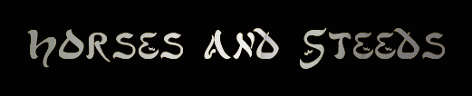

Steed
Name (Steed Type): Price
Stables
are listed alphabetically.
Stables: Aran'riod, Azdun, Blackrock,
Itinerant Bazaar, Manusha, Moghedu, New Thera, Tumacula, Tsol'aa Village, Zanzibaar
ARAN'RIOD
Aran'riod
from 'Path nearing forest' - N, NE, 3N,
NE, 2N, NW
a
gleaming black riodian war horse (war horse): 25000gp
Tall
and handsome, this jet black gelding has been bred for war. A cross between
the high-spirited light horses of the world and the strong, dependable work
horses, this breed has the best qualities of its parents. Proud,
brave, intelligent, speedy, patient, and strong, this horse is ideally
suited for the rigours of war. The intensive training required to make a
horse a true warhorse is evident in the perfect stillness of the animal, a
lack of reaction to the noises around it, and its immediate and precise
response to the commands given it.
A gleaming black riodian war horse is not
one to be trifled with.
He weighs about 1300 pounds.
a snowy white riodian war horse (war horse): 25000gp
Tall
and handsome, this snow white gelding has been bred for war. A
cross between the high-spirited light horses of the world and the strong,
dependable work horses, this breed has the best qualities of its parents.
Proud, brave, patient, and strong, this horse is ideally suited for the
rigours of war. Its graceful form is still, even its ivory tail, and
intelligence gleams from its dark eyes. A grey tinge surrounds its hooves
and mouth, the slight contrast enhancing its appearance.
A snowy white
riodian war horse is not one to be trifled with.
He weighs about 1300
pounds
a
woolly mammoth (legendary steed): 145000gp
This
woolly mammoth has long brown hair all over its huge, ponderous body.
Two long yellowed tusks curl upwards and taper to a sharp point although
they are chipped by much use.
A woolly mammoth appears to be
extraordinarily strong.
He weighs about 1875 pounds.
AZDUN
Azdun
(Underground forest), Cages Copse from 'the Courtyard'
2D, W, 4S, SW,
SE, NE, W, D, 3N, NE, E, NW, W, 2NE, 2E, N
a
dire bat (legendary steed): 115000gp
This
gargantuan bat is big enough for a rider to mount. Its massive
leathery wings clearly show defined veins and tendons, able to clearly
support its rider through the air. Two beady black eyes are set into its head,
and two fangs show from out of its small mouth. The dire bat is a rich deep
black, and something inside you whispers that this is no ordinary
animal.
A dire bat is quite powerful.
He weighs about 1875
pounds.
a
stone gargoyle (legendary steed): 125000gp
A
fearsome gargoyle is a legendary creature large enough to carry a
mounted rider. Its claws are sharp and deadly, and its groteseque head
makes it a particularly ugly creature. As grey and hard as stone, the only
note of beauty is its gorgeous grey wings which sprout from its muscular
back and surround its twisted form like a billowing silken cape.
A stone
gargoyle is quite powerful.
He weighs about 2625 pounds.
a
blood steed (legendary steed): 145000gp
Spawned
from the depths of a horrific nightmare, the blood steed is terrifying to
behold. Its musculature is perfect in form but its movement has an air
of the unnatural about it. Its lean body is covered with rough black fur
rather than the hair that comprises the coat of most equines, and the hair
of its mane and tail is thick yet coarse. Though no wounds are visible, blood
oozes steadily from the corners of its mouth and its hocks, adding to its
fearsome image of a demon manifesting on this plane. Its great black wings
drape
themselves like a leathery cloak over its body when at rest but
when extended they span impressively and look akin to the wings of a bat.
The blood steed wears its aura of terror like a second skin and seemingly
takes no notice of the pronounced effect its passing has.
A blood steed
is quite powerful.
He weighs about 1875 pounds.
BLACKROCK
"Ancient Stables" from "A broken landscape" off Mhaldor's Isle
2D,
NE, 2D, N, NE, 2D, N, E, NE, NW, NE, N, 2D, SE, SW, D, E, 2NE, N,
W
a
large domesticated ant (warhorse): 31000gp
Looking
very nervous to be out of its native habitat, this large ant has been broken in
and a large riding saddle has been attached to its carapace. Three sets of
spindly legs carry its tremendous weight around the room, displaying the
strength in the scrawny appendages. Its dark black eyes shift nervously back and
forth, and a large pair of mandibles click together with a powerful shift of its
jaw. Two large antennae hang loosely from the top of its head, twitching
nervously in various directions in response to any activity in the area. The ant
is a deep black colour with a set of long crimson stripes carrying down each
side of its carapace, stopping at its back end.
A large domesticated ant is
not one to be trifled with.
He weighs about 937 pounds.
a
small burro (mule): 1400gp
Numerous
packs and large bags weigh down the tiny frame of this burro, a small beast
ready for any journey. The burro stares forward with a set of sappy eyes,braying
softly at every little noise, and blinking painfully at any light brighter than
a torch. A thick, black mane of hair crowns its head, stretching gracefully down
its neck to the back. A worn mass of tangled grey fur covers the rest of its
small frame, the hair becoming quite ragged in some parts, and thoroughly coated
with rock dust in most parts.
A small burro does not look particularly
dangerous.
He weighs about 468 pounds.
a
greater war horse: 40000gp
The
white mane and tail of this heavy horse have been braided, the ends
of which are tipped in bronze. Even for a war horse, this animal is
enormous, standing well over twenty hands tall at the shoulders. Several
battle scars mar the milky white coat, yet its beauty remains undiminished.
A
greater war horse is quite powerful.
He weighs about 1500 pounds.
a
medium horse: 6000gp
Dappled
grey and white, a medium horse has large brown eyes and lean muscles on its
sturdy frame. With a flowing white mane and tail, this horse is
an excellent example of its specimen.
A medium horse exudes a quiet
confidence.
He weighs about 1000 pounds.
a
heavy horse: 10000gp
With
its dark black coat, tail and mane, this horse is heavily muscled and has a
large frame. Looking around with its large dark eyes, it seems impatient
to gallop off and run through plains.
A heavy horse seems strong and
confident.
He weighs about 1100 pounds.
a
light horse: 4000gp
This
horse is a bit slight in build, but is sleek and graceful as well. Its coat
is a soft brown dappled with spots of white, matching the light mane
that drapes over its arched neck. A long tail sways slightly behind it,
reaching nearly to its hooves in a chestnut-colored waterfall. Its eyes
seem friendly and intelligent, dark pools set below its erect ears.
A
light horse seems to be unafraid.
He weighs about 800 pounds.
a
stubborn mule: 1500gp
This
equine is on the small side with short but able legs that seem both strong and
supple. Its coat is a simple brown, becoming darker at its coarse mane
and thick tail, and a thick neck culminates in a set of elongated ears.
Long and almond-shaped, they protrude from atop the mount's head, and a
dark forelock dips between them, matching the black, reflective eyes of
this mule.
A stubborn mule does not look particularly dangerous.
He weighs
about 500 pounds.
a
sleek pony: 2000gp
A
bit small and low to the ground, this pony still seems strong and sturdy. Its
coat is a pleasant shade of light brown, though its hooves and lower legs are a
soft white that matches the patch upon its muzzle. Its mane is short, and
its tail is long, both sent a-flutter in a breeze. Its diminutive stature
gives it a friendly, endearing look.
A sleek pony appears to lack
strength.
He weighs about 700 pounds.
a
war horse: 20000gp
The
black mane and tail of this heavy horse have been braided, the ends
of which are tipped in steel. Its eyes flash and teeth bare to all but its
master or mistress. Larger than even a heavy horse, this steed has been
trained for battle and looks ready for action.
A war horse is not one to
be trifled with.
He weighs about 1300 pounds.
DWARVEN
CAMP
Siroccians from "The Shrine of Ascension"
3D, SE, S, SW, N, NE, N, E, NW, N, NW, N, 2NE, N, E
a
rugged war goat (medium horse): 7300gp
This
rough-around-the-edges beast is battle scarred and has seen much better days.
His fur, thick and grey, is trimmed and combed down neatly into his sides. The
long hair at this rough beast's underbelly is tied, braided and clasped together
with brass fittings. His thick black hooves are barely visible through the
ornate mithril plate protecting its legs. Armour also protects the spots up
around its neck and down its spine and is attached into the thick leather saddle
mounted on him. A strong set of chain and leather reins are strapped to the
saddle and secured tightly around the goat's head. The beast chews down on the
bit of the reins with its jaw line twitching, covered in filthy bits of wiry
hair, drool soaked and stained. The animal has decidedly taken a liking to the
bit, as he has chewed it down into the steel bar of its
center.
A
rugged war goat exudes a quiet confidence.
He
weighs about 656 pounds.
a
long-horned battle ram (war horse): 25500gp
This
thick bodied ram is bred in the dwarven outposts of Sapience, to serve as a
steed to the stocky dwarven cavalry. From the toughest of the dwarven rams, this
short, squat beast is a tremendously powerful specimen of its kind. Its fleece is long, kinked and knotted
from long travels without a decent washing. A brilliant blue cloth covers lays
underneath the black saddle mounted to the ram's back. Thick chain and leather
wind together and strap themselves around the ram's horns and down around a bit
that has been firmly pressed into its jaw-line. The two long, twisting horns
have been intricately carved into delicate patterns and are inlaid with mithril
and gemstone runes. This is a fierce and rugged beast indeed, a true pride of
the dwarven breeder.
A long-horned battle ram is not one to be trifled with.
He weights about 968 pounds.
EL'JAZIRA
El'Jazira from
'In the desert before an oasis'- E, N, 2E
a
sorrel desert mare (light horse): 4600gp
Refined
and delicate characterizes this well-bred el'Jaziran mare. Her
sleek muscles ripple beneath her rich, red coat, and her wavy flaxen tail
and mane gleam in even the faintest of light. An arching neck leads to a
small but distinctive head from which liquid brown eyes stare out
soulfully. Her eyes have an inner fire, reminding you of the spirited
nature of the desert horses.
A sorrel desert mare exudes a quiet
confidence.
She weighs about 800 pounds.
a dromedary camel (medium horse): 7500gp
With
a tan, shaggy coat like the hair of a coconut, this camel has one
great hump on its back, supported almost precariously by spindly-looking
legs. Although not the most comfortable method of transport, this animal is
perfect for crossing expanses of desert, and some well-placed blankets can
make all the difference.
A dromedary camel exudes a quiet confidence.
He
weighs about 1000 pounds.
a
heavy battle camel (greater war horse): 50000gp
A
heavy-set beast bred for meanness, this camel has every bite, spit and
snort of its ancestors distilled into one vicious creature that bares its
yellowed teeth and stares angrily at you. Created from the larger, bactrian
camel, this one has two humps that store its water. Rippling muscle is
easily visible behind its short, rough coat, and the legs of this camel
look strong and tough.
A heavy battle camel is quite powerful.
He weighs
about 1300 pounds.
a
proud, black desert stallion (medium horse): 6900gp
A
true black, this high-strung stallion's coat gleams ebon no matter how
long it stands under the harsh desert sun. Tall and sleek, this stallion is
bred for speed, endurance, and the ability to carry on its breed's
distinctive qualities of high-spiritedness, intelligence, and
sure-footedness. Black eyes gleam from the stud's handsome face while its
wavy black tail and mane almost blend into its coat.
A proud, black
desert stallion exudes a quiet confidence.
He weighs about 1000
pounds.
a
war elephant (legendary steed): 138000gp
The
massive form of a war elephant stands before you. Its trunk is
raised slightly to sniff the air before it. The muscles and sinew of the
animal's legs and shoulders bulge out as it stands ready to do battle. The
elephant's ears flap occasionally to cool off it's back or flick flies off.
The dark eyes of the war elephant are intelligent and look around with an
almost knowing gaze.
A war elephant appears to be extraordinarily
strong.
He weighs about 2187 pounds.
GENJI
Genji Village,
Atavian Stables from the gates of the city - 3NW, 2NE, N
a
noble hippogriff (legendary steed): 125000gp
Born
of the fabled breeding of a griffin and a horse, the hippogriff is truly a
fierce creature. The body is that of a horse, strong and bred for war,
save the forelegs which hold the mark of its avian ancestry. Outstretched
from the russet colored body are a pair of giant golden eagle-like wings
that carry the creature into flight. A proud eagle head adorns its equine
head and bears the look of many battles.
A noble hippogriff is quite
powerful.
He weighs about 1250 pounds.
a giant eagle (legendary steed): 115000gp
Many
times larger than an average eagle, this enormous specimen is large enough to
carry even the largest savannah cow. Great golden feathers cover
its muscular physique and its ice-blue eyes search the ground with a deep,
piercing gaze. An aura of majesty surrounds the giant eagle, from its beauty to
its very bearing, which speaks of travels throughout all of Sapience and
beyond.
A giant eagle is quite powerful.
He weighs about 1875
pounds.
an
alabaster pegasus (legendary steed): 145000gp
The
pegasus is possessed of an ethereal, haunting beauty. His perfect form
is covered with a downy alabaster coat, and his pristine mane and tail
flow silkily in the breeze. His wings, comprised of velvety feathers, rest
flush against his body when at rest and spread to an impressive span when
in flight. A mantle of purity lies over this noble creature. Though the woes and
evils of the world swirl about him, he remains untouched and unsullied.
An
alabaster pegasus is quite powerful.
He weighs about 1875 pounds.
ISLE
OF NEW HOPE
Isle
of New Hope from 'Entrance to a humble village' - S, 2SE, E, N,
OUT
a painted
mazaran (medium horse): 7500gp
A bold pattern
of chestnut and white markings covers the sleek coat of this wild mare. She
stands about fifteen hands high, with a white blaze in the centre of her dark
face and white socks on her forelegs. Aside from a broad splash of white that
lays over her back like a saddle, the rest of her coat is a dark, lustrous
brown, while her mane and tail are a silky cream colour. A light bridle slips
over her nose and ears, the reins tied loosely behind her neck.
A
painted mazaran exudes a quiet confidence.
She weighs about 1375
pounds.
an
ebony mazaran (heavy horse): 12000gp
The
inky coat of this stallion is smooth upon his back, gleaming over chiseled
muscles and along his supple legs. Glistening black hair brushes against his
neck, and the end of his tail falls in waves to nearly brush the ground.
Measuring just over sixteen hands in height, he is a strong and powerful steed,
with a wildness evident in the proud arch of his neck and haughty glare. Slipped
over his nose and ears is a bitless bridle with the reins tied loosely behind
his neck.
An
ebony mazaran seems strong and confident.
He
weighs about 1375 pounds.
a russet
mazaran (war horse): 22000gp
Tall
and majestic, this rugged stallion bears the powerful build of a work horse and
the elegance of an aristocratic steed. His coat is rough and wavy in places,a
dark rust colour that shines in the light from sun and moon. Caught in his tail
are lengths of grass and wildflowers, and between the tousled waves of his mane
and forelock his ears prick forward attentively, alert for danger. A bitless
bridle of braided leather encircles his nose and ears, the reins tied loosely
behind his neck.
A
russet mazaran is not one to be trifled with.
He
weighs about 1375 pounds.
ITINERANT BAZAAR (for posterity)
a
vividly striped quagga: 60000gp
a plated fernbeast: 200000gp
MANUSHA
a
stock gypsy's pony (pony): 2500gp
Small
and stocky, this pony has had her mane decorated with brightly
coloured ribbons and bells, a last reminder of her original gypsy owners.
Her coat is a dusky brown, though her mane is a stark black. Her tail has
been combed free of brambles and knots, and she leisurely swishes around,
swatting flies away.
A stock gypsy's pony appears to lack strength.
She
weighs about 400 pounds.
a black and white striped zebra (light horse):
5500gp
A
graceful animal from a far-away land, this zebra appears in most
respects like any of the lighter varieties of horse that abound in the
land. However, what makes this animal so much different from those other
animals are the exotic white and black stripes that cover its muscular
form. The mane of the zebra is thick and stiff, and it has large ears and
huge eyes that are like deep brown wells.
A black and white striped
zebra exudes a quiet confidence.
He weighs about 800 pounds.
MOGHEDU
Moghedu Stables
from 'at the foot of the
IN, 3N, 3NW, 2W,
D, 3W, NW, SW, NW, D, 2NE, 2W, 4N, NE, 2N, NE, E, N, D, 6S, SW, S, SW, SE, D,
2SE, 2E, SW, W
a
stubborn mule of Moghedu (mule): 1750gp
This
equine is somewhat smaller than most mules with short strong legs well able
to scramble over the rocky terrain of Moghedu. Its small stature belies its
strength but the muscles visible as it moves proclaim that the beast
was bred for burden. Its coat is a simple brown, becoming darker at its
coarse mane and thick tail, and a thick neck culminates in a set of
elongated ears. Long and almond-shaped, they protrude from atop the mount's
head, and a dark forelock dips between them, matching the black, reflective
eyes of this mule.
A stubborn mule of Moghedu does not look particularly
dangerous.
He weighs about 500 pounds.
NEW THERA
New Theran Festivities Annex from central fountain - NE
NOTE: This shop only appears seasonally.
a
silvered reindeer (medium horse): 200000gp
The stocky body of this northern reindeer
is covered with coarse, faded dun fur which bears broad silver streaks across
his shoulders and hindquarters. His impressive antlers are covered in a fine
layer of soft grey velvet, and are dressed with a number of tiny bells that
jingle musically at the slightest movement. A simple leather riding saddle is
fitted to his back and padded by a wool blanket woven with bright stripes of
green and white.
A silvered reindeer exudes a quiet confidence.
He weighs
about 618 pounds.
TOMACULA
Tomacula Village
from 'The statue of Khalas the Wanderer' - 2NE
a
mighty midnight charger (greater war horse): 46000gp
The
onyx-hued mane and tail of this heavy horse have been braided, the ends of which
are tipped in silver. Even for a war horse, this animal is enormous, standing
well over twenty hands tall at the shoulders. Several battle scars mar the dark
ebony coat, yet its beauty remains undiminished.
A
mighty midnight
charger is quite powerful.
He
weighs about 1500 pounds.
a regal golden charger (greater war horse):
46000gp
A
golden stallion with flaxen mane and tail, this charger stands at least six feet
at its shoulder. It is strongly muscled but not necessarily bulky. Proud and
brave, its eyes shine with intelligence and its perfect stillness and immediate
compliance with commands are a testament to the intense training that it has
undergone. Able to carry the heaviest of burdens into battle and equally
importantly carry them out, few warriors could find any fault with this
steed.
A
regal golden charger is quite powerful.
He
weighs about 1500 pounds.
a blue roan (light horse): 4800gp
This
horse is of a small frame, but its tradeoff seems to be speed and grace. Its
coat is black but interspersed with fine white hairs, the classic roan pattern.
Its appearance is thus of a peaceful grey, sometimes tinted blue at a glance,
that makes for an attractive and unique appearance.
A
blue roan exudes a quiet confidence.
He
weighs about 800 pounds.
a storm bull (legendary steed): 135000gp
This
fantastic animal's smooth hide is as blue as the stormy skies of Sapience and is
stretched taut over its tremendous bulk. The creature's massive head is crowned
by a set of majestic black horns, each viciously pointed and gleaming like onyx
crystal. The large orbs that are the animal's eyes glow with a blue-white energy
from within. From its eyes plays an electrical current that glints brightly off
the mithril ring that is pierced through its septum. Each of its stocky leg ends
in a razor-sharp hoof covered over by thick, black mange. A thin line of long,
rough hair descends from the crest of its head down its spine to the nape of its
shoulders and is tossed wildly to one side of its frame. Lazily whipping back
and forth at the beast's rear is its slender tail, capped by a tuft of long
black hair.
A
storm bull appears to be extraordinarily strong.
He weighs about 793 pounds.
TSOL'AA
VILLAGE
Tsol'aa Village
from 'Under a Tsol'aa guard tree'- SW, 2S, W
an
imposing boar (legendary steed): 135000gp
This
larger than life creature is fearsome and intimidating, its furry visage
dominated by two large, shining white tusks. Between each of the pointed teeth
is the creatures scarred and blackened snout that twitches spasmodically when
the beast sniffs out its food. Small beady eyes sit deep inside the boars face,
closely standing at a nervous attention are its tiny ears that perk at the
slightest noise. Its front legs are strong and stocky and end in sharp hoofed
feet, its back legs a dwarfed twin of the front two. A thick mane of black hair
run down the giant beasts back and hangs off onto the animals sides. A small
tail topped with a tuft of black hair whips back and forth wildly behind
him.
An
imposing boar appears to be extraordinarily strong.
He
weighs about 400 pounds.
a majestic stag (medium horse): 7500gp
Its
coat akin to the color of redwoods, the large stag before you is a rich,
red-tinged brown that adds to the creatures majestical appeal. A solid, arching
neck culminates into a crown of branching antlers that sweep up in a graceful
curve. Widespread ears sit below them, alert for those who would disturb its
habitat, ensuring it is ready to flee on slender legs or use its antlers to
deadly effect.
A
majestic stag exudes a quiet confidence.
He weighs about 900 pounds.
ZANZIBAAR
From the Harbour - SE, N
a giant tortoise
(legendary steed): 155000gp
A high, domed carapace of rugged
grey and brown plates protects the back of this giant tortoise. Supported by
four solid, wrinkly legs, a stubby tail pokes out of one end, a rounded head out
of the other. Seemingly harmless, she seldom moves, the periodic blinking of her
amber-hued eyes the only sign of life. A harness of dark leather is fitted
around the shell, with a set of long reins attached for the ease of its
rider.
A giant tortoise appears to be
extraordinarily strong.
She weighs about 2500 pounds.
an exotic red stallion
(greater war horse): 60000gp
With a glossy coat of cinnamon hue
and a flowing mane and tail of pale white, this stallion is an elegant and
striking steed. A bridle of colourfully dyed leather wraps around his muzzle and
ears, the long reins resting at the base of his neck when not in use. Lean and
athletic, he has been bred for speed and stamina, a prized mount for battle or
sport.
An exotic red stallion is quite
powerful.
He weighs about 1500 pounds.
a Baarian tiger
(legendary steed): 135000gp
This regal tiger sports a coat of
thick, fluffy orange and white fur striped with black. Exceptionally large, he
is well-muscled yet moves with the grace and elegance of a much smaller
creature. He does not seemed threatened by strangers, remaining fearless and
proud, and his golden eyes are focused and alert. Upon his back is a saddle of
brightly decorated leather, the straps wrapping around his belly and chest to
hold it securely in place. A matching harness encircles his muzzle and ears, and
a set of long reins enables his rider to direct him back and
forth.
A Baarian tiger appears to be
extraordinarily strong.
He weighs about 1875
pounds.